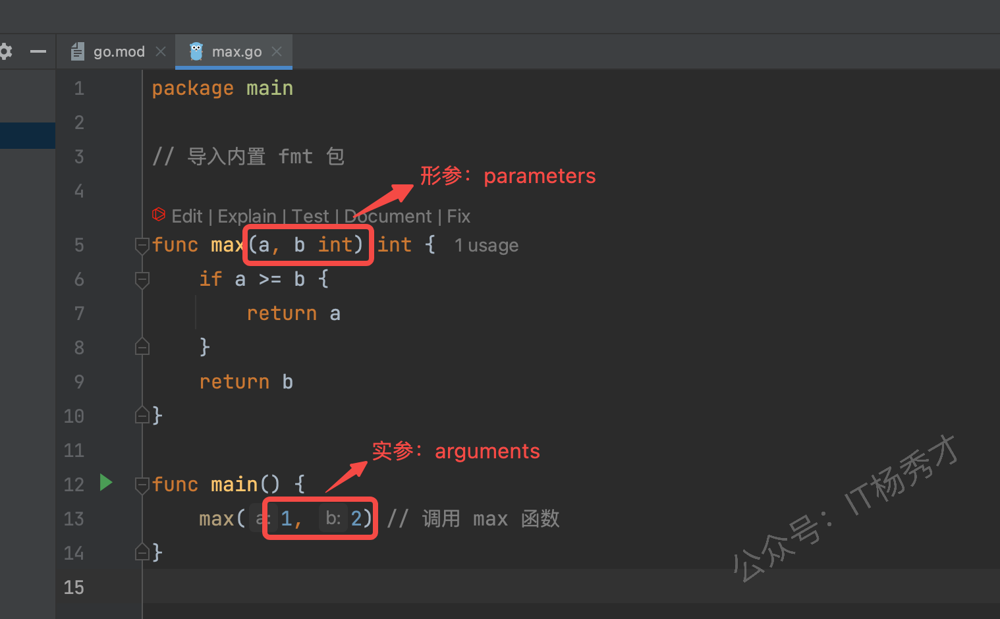
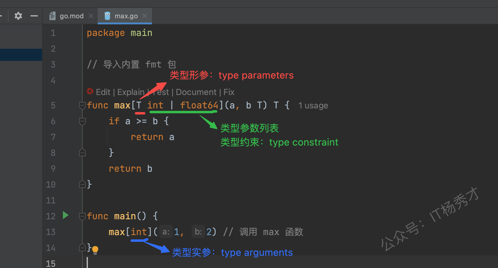
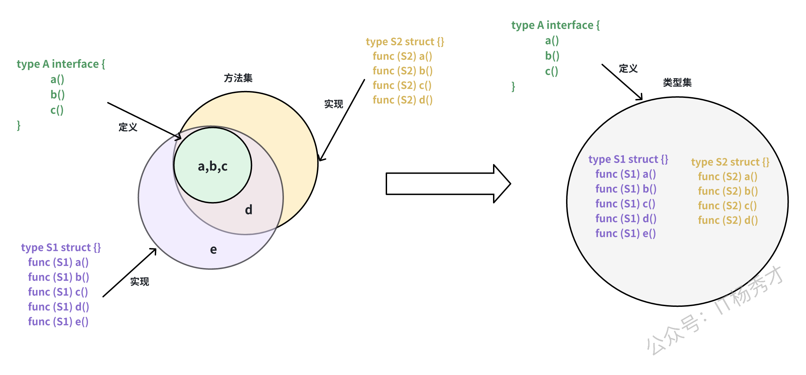
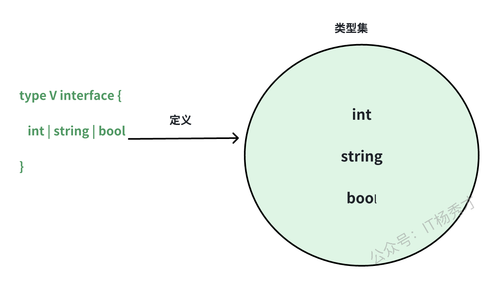

🎯 什么是泛型
在 Go 1.18 版本中，泛型特性被引入，这是 Go 语言自发布以来最重要的更新之一。
泛型允许开发者在编写代码时不必立即指定具体的数据类型，而是在使用时再确定。换句话说，泛型使得我们可以编写适用于多种数据类型的通用代码。
泛型是一种编写与具体类型无关的代码的方法，它使得我们可以创建适用于多种类型的函数和数据结构。
🤔 为什么需要泛型
假设我们需要实现一个函数来计算切片中元素的总和：
|
|
然而，这个函数只能处理 []int 类型的切片。如果我们想支持 []float64 类型的切片，就需要再定义一个类似的函数：
|
|
如果我们还需要支持其他类型的切片，就需要再定义相应的函数。这种重复的代码显然是低效的，因为计算总和的逻辑并不依赖于具体的元素类型。
在 Go 1.18 之前，我们可以通过反射来解决这个问题，但反射会降低代码的执行效率，并且失去了编译期的类型检查，同时大量的反射代码也会让程序变得难以理解。
类似这样的场景非常适合使用泛型。从 Go 1.18 开始，我们可以使用泛型来编写一个适用于所有元素类型的通用 sum 函数：
|
|
📚 泛型语法
泛型为 Go 语言引入了三个重要的新特性：
- 支持在函数和类型定义中使用类型参数，使其更加通用
- 扩展了接口的概念，使其可以表示一组类型的集合，不再局限于方法集
- 引入智能类型推导机制，在很多场景下可以省略显式的类型参数
🔤 类型参数
🧩 类型形参和类型实参
函数在使用上需要在函数定义时指定形参，函数调用时需要传入实参。

在引入泛型后，Go 语言的函数和类型现在可以包含类型参数。类型参数列表的语法类似于普通参数列表，但使用方括号（[]）而不是圆括号（()）。

借助泛型，我们可以声明一个适用于一组类型的 max 函数。
|
|
🚀 类型实例化
这次定义的 max 函数同时支持 int 和 float64 两种类型，也就是说当调用 max 函数时，我们既可以传入 int 类型的参数。
|
|
也可以传入 float64 类型的参数。
|
|
向 max 函数提供类型参数（在本例中为 int 和 float64）称为实例化（instantiation）。
类型实例化分两步进行：
- 首先，编译器在整个泛型函数或类型中将所有类型形参（type parameters）替换为它们各自的类型实参（type arguments）
- 其次，编译器验证每个类型参数是否满足相应的约束
在成功实例化之后，我们将得到一个非泛型函数，它可以像任何其他函数一样被调用。例如：
|
|
max[float64] 得到的是类似我们之前定义的 maxFloat64 函数——fmax，我们可以在函数调用中使用它。
🛠️ 类型参数的使用
除了函数中支持使用类型参数列表外，类型也可以使用类型参数列表。
|
|
在上述泛型类型中，T、K、V 都属于类型形参，类型形参后面是类型约束，类型实参需要满足对应的类型约束。
泛型类型可以有方法，例如为上面的 Node 实现一个添加元素的 Add 方法。
|
|
要使用泛型类型，必须进行实例化。Node[string] 是使用类型实参 string 实例化 Node 的示例。
|
|
🔒 类型约束
普通函数中的每个参数都有一个类型；该类型定义一系列值的集合。例如，我们上面定义的非泛型函数 maxFloat64 那样，声明了参数的类型为 float64，那么在函数调用时允许传入的实际参数就必须是可以用 float64 类型表示的浮点数值。
类似于参数列表中每个参数都有对应的参数类型，类型参数列表中每个类型参数都有一个类型约束。类型约束定义了一个类型集——只有在这个类型集中的类型才能用作类型实参。
Go 语言中的类型约束是接口类型。
就以上面提到的 max 函数为例，我们来看一下类型约束常见的两种方式。
类型约束接口可以直接在类型参数列表中使用。
|
|
作为类型约束使用的接口类型可以事先定义并支持复用。
|
|
在使用类型约束时，如果省略了外层的 interface{} 会引起歧义，那么就不能省略。例如：
|
|
📦 类型集
从 Go 1.18 版本开始，接口类型的定义发生了变化，不再仅仅定义方法集（method set），而是定义类型集（type set）。 这意味着接口类型不仅可以作为值的类型，还可以作为类型约束使用。

将接口类型视为类型集而不是方法集的一个好处是：我们可以显式地向类型集中添加类型，从而以新的方式控制类型集。
事实上，Go 语言扩展了接口类型的语法，使我们能够在接口中添加类型。例如：
|
|
上述的代码定义了一个包含 int、string 和 bool 类型的类型集。

自 Go 1.18 起，接口不仅可以嵌入其他接口，还可以嵌入任意类型、类型的联合或具有相同底层类型的无限类型集合。当接口用作类型约束时，其定义的类型集会精确地指定允许作为相应类型参数的类型。
🔗 | 符号
使用 | 运算符可以将多个类型组合成一个类型集合，例如 T1 | T2 表示一个包含类型 T1 和 T2 的类型集。下面的 Numeric 接口就定义了一个由 Integer 和 Float 类型组成的类型集。
|
|
🌊 ~ 符号
~T 运算符用于匹配所有以 T 为底层类型的类型集合。比如 ~string 不仅匹配 string 类型本身，还会匹配所有以 string 为底层类型的自定义类型。
|
|
注意： ~ 符号后面只能是基本类型。
接口作为类型集合的新机制为 Go 语言带来了强大的类型约束能力。需要注意的是，目前这种使用新语法定义的接口类型仅限于作为类型约束使用，不能作为普通的接口类型使用。
🪪 any 接口
Go 1.18 版本中引入了一个新的预声明标识符 any，它是空接口类型 interface{} 的别名。这个别名的引入可以在类型参数列表中使用时提供更简洁的语法。
|
|
由此，我们可以使用如下代码：
|
|
🔍 类型推断
类型推断可以让编译器自动推导出类型参数的具体类型，从而简化泛型函数的调用语法。虽然类型推断的实现机制比较复杂，但它极大地提升了泛型代码的使用体验，让开发者可以更自然地编写和调用泛型函数。
🧮 函数参数类型推断
在使用泛型函数时，如果每次都需要显式指定类型参数会比较麻烦。以我们以之前的 max 函数为例：
|
|
在这个函数中，T 是一个类型形参，它定义了 a 和 b 参数的类型。调用这个函数时，我们可以明确指定类型实参：
|
|
在大多数情况下，编译器能够根据传入的参数自动推导出类型参数 T 的具体类型。这种类型推导机制让我们可以省略显式的类型参数声明，使代码更加简洁优雅。
|
|
这种类型推断机制被称为函数实参类型推断，它可以根据传入的实参自动推导出函数的类型参数。但需要注意的是，这种推断只对函数参数中使用的类型参数有效，对于那些仅在返回值或函数体内部使用的类型参数则无法推断。比如对于 CreateT[T any]() T 这样的函数，由于类型参数 T 只用在返回值中，编译器就无法进行类型推断。
🧠 约束类型推断
Go 语言还提供了一种称为约束类型推断的机制。为了更好地理解这个概念，让我们通过一个处理整数缩放的示例来说明：
|
|
上面的泛型函数可以处理任何整数类型的切片数据。
让我们来看一个具体的应用场景。假设我们需要处理一个表示多维坐标的 Vector 类型。从本质上说，Vector 就是一个存储坐标值的整数切片。为了方便使用，我们为这个类型添加了一些额外的功能，比如一个用于格式化输出的 String 方法。
|
|
因为 Vector 类型本质上是一个整数切片，所以我们可以尝试直接使用之前定义的 MultiplyEach 函数来处理它：
|
|
这段代码在编译时会失败，错误信息为 result.String undefined (type []int32 has no field or method String。
这个问题的根源在于泛型函数 MultiplyEach 的返回值类型。该函数返回一个 []E 类型的切片，其中 E 是切片元素的类型。当我们传入 Vector 类型（底层是 []int32）时，函数返回的是一个普通的 []int32 切片，而不是我们期望的 Vector 类型。这导致返回值无法调用 Vector 类型特有的 String 方法。
要修复这个问题，我们需要修改 MultiplyEach 函数的定义，让它能够保持输入切片的具体类型。我们需要为切片本身引入一个新的类型参数。
|
|
我们添加了一个新的类型参数 S，它代表切片的具体类型。通过约束 ~[]E，我们指定了 S 必须是一个元素类型为 E 的切片类型。函数返回值类型也改为 S，这样就能保持输入切片的原始类型。在函数实现中，唯一的变化是使用 S 而不是 []E 来创建结果切片。
这样修改后的 MultiplyEach 函数既可以处理普通的整数切片，也可以处理 Vector 这样的自定义切片类型。
这里有一个有趣的问题：为什么我们可以直接调用 MultiplyEach(v, 3) 而不需要显式指定类型参数，即不需要写成 MultiplyEach[Vector, int32](v, 3)？
MultiplyEach 函数定义了两个类型参数：S 和 E。当我们调用 MultiplyEach(v, 3) 时，编译器通过函数参数类型推断可以确定 S 的类型是 Vector。但对于类型参数 E，由于 3 是一个无类型常量，仅通过参数类型推断无法确定其具体类型（它可能被推断为默认的 int 类型，这与 Vector 的底层类型 []int32 不匹配）。这时，编译器会使用一种叫做约束类型推断的机制。
约束类型推断是指编译器根据类型参数的约束关系来推导类型参数。当一个类型参数的约束是基于另一个类型参数定义的，并且其中一个类型参数已知时，就可以通过约束关系推断出另一个类型参数。
在我们的例子中，S 的约束是 ~[]E，这表明 S 必须是一个元素类型为 E 的切片类型。当编译器知道 S 是 Vector（即 []int32）时，就可以通过这个约束关系推断出 E 必须是 int32。这就是为什么我们可以省略显式的类型参数。
⚖️ Go 泛型与 Java 泛型的对比
⚙️ 底层实现对比
Go 泛型采用"混合模型"：
- 当泛型方法只依赖接口能力时进行类型擦除
- 当依赖具体类型行为时进行单态化，为不同类型生成专属代码（零开销）
因此 Go 泛型支持基础类型，性能更高：编译器根据使用的具体类型生成专门的函数或结构体代码，类型检查和操作都在编译期完成，运行时不需要类型信息或类型转换，性能接近手写具体类型，类型约束（接口 + 联合类型）在编译期验证，保证安全性。
优点：
- 运行时不需要类型转换
- 高性能
缺点：
- 编译后可执行文件可能大
Java 泛型是"类型擦除"，在运行时没有泛型。所有泛型编译后变成 Object，会导致性能损耗（装箱）和不支持基础类型：
- 编译器在生成字节码时将泛型类型替换为上界类型（默认 Object）
- 泛型信息在运行时丢失（只保留签名）
- 编译器自动插入类型转换（cast）和桥接方法
⚖️ 主要区别
| 特性 | Go 泛型 | Java 泛型 |
|---|---|---|
| 实现方式 | 混合模型（单态化 + 类型擦除） | 类型擦除 |
| 性能 | 接近手写具体类型 | 有装箱开销 |
| 支持基础类型 | ✅ 支持 | ❌ 不支持 |
| 运行时类型信息 | 保留 | 丢失 |
| 编译期类型检查 | ✅ 完整 | ✅ 完整 |
💡 小结
泛型的引入为 Go 语言带来了更强大的抽象能力。当我们在项目中遇到需要为不同类型编写相似逻辑的场景时，泛型可以帮助我们优雅地解决这个问题。它不仅可以减少代码重复，还能保持类型安全。
泛型和接口各有其适用场景。接口更适合定义对象的行为规范，而泛型则更适合处理与具体类型无关的通用算法和数据结构。两者结合使用，可以让我们的代码更加简洁、安全和可维护。